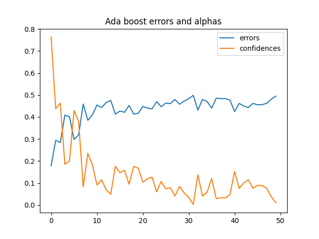
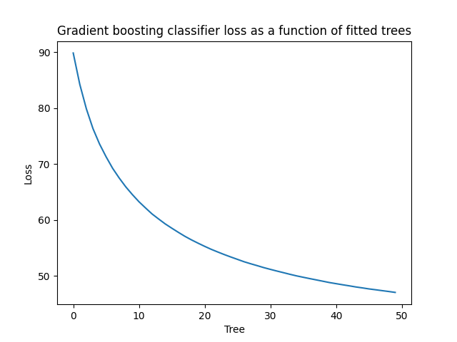
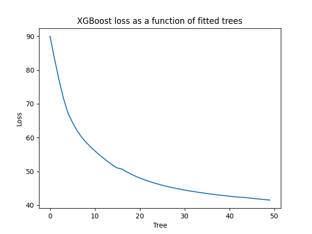
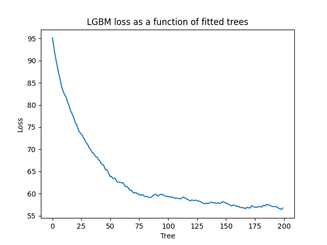
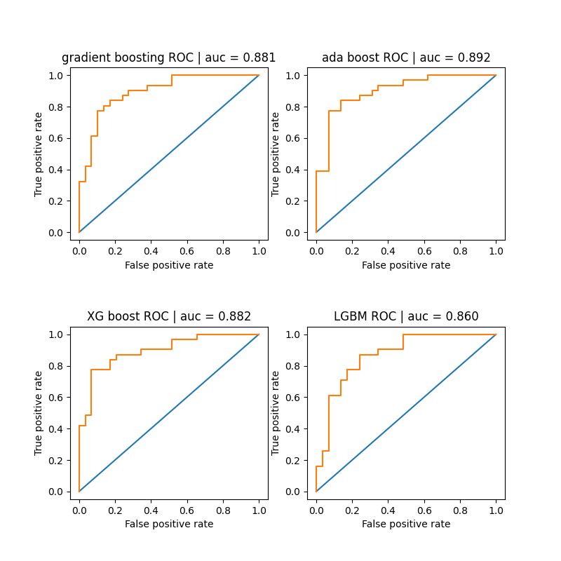
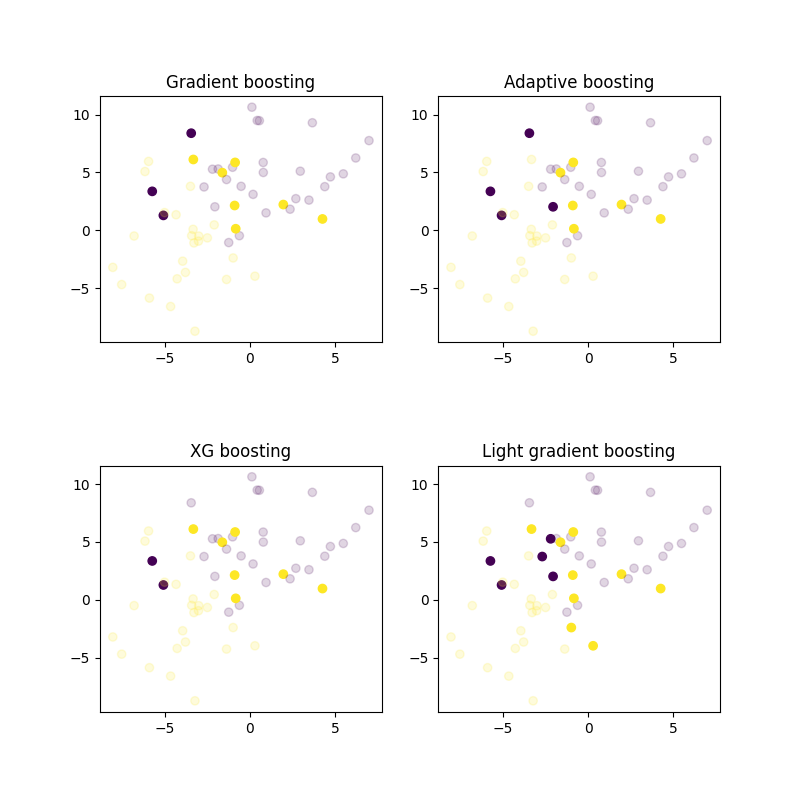

Note
Go to the end to download the full example code.
Boosting Classifier Comparison
This script compares the performance of various boosting classifiers, including Gradient Boosting, AdaBoost, XGBoost, and LightGBM. Also sklearns version of AdaBoost is compared.
The script generates a synthetic dataset, trains multiple models, measures execution time, computes classification accuracy, and visualizes loss curves and ROC curves.
- 
- 
- 
- 
- 
- 
GBM time with 50 weak learners: 1.92 seconds
gradientboost accuracy: 0.8333333134651184
Adaboost time with 50 weak learners: 1.66 seconds
adaboost accuracy: 0.8333333134651184
SKlearn adaboost time with 50 weak learners: 0.08 seconds
sklearn accuracy: 0.8500000238418579
XGBoost time with 50 weak learners: 2.45 seconds
XGBoost accuracy: 0.8500000238418579
LGBM time with 200 weak learners: 1.71 seconds
LGBM accuracy: 0.7666666507720947
import torch
from sklearn import datasets
import matplotlib.pyplot as plt
from sklearn.ensemble import AdaBoostClassifier as sk_AdaBoostClassifier, GradientBoostingClassifier as sk_GradientBoostingClassifier
from sklearn.tree import DecisionTreeClassifier
from time import perf_counter
from DLL.MachineLearning.SupervisedLearning.Trees import GradientBoostingClassifier, AdaBoostClassifier, XGBoostingClassifier, LGBMClassifier
from DLL.Data.Preprocessing import data_split
from DLL.Data.Metrics import accuracy, roc_curve, auc
n_classes = 2
X, y = datasets.make_blobs(n_samples=200, n_features=2, cluster_std=3, centers=n_classes, random_state=3)
x_train, y_train, _, _, x_test, y_test = data_split(torch.from_numpy(X).to(dtype=torch.float32), torch.from_numpy(y), train_split=0.7, validation_split=0.0)
model = GradientBoostingClassifier(n_trees=50, max_depth=1, learning_rate=0.5, loss="log_loss")
start = perf_counter()
history = model.fit(x_train, y_train)
print(f"GBM time with {model.n_trees} weak learners: {perf_counter() - start:.2f} seconds")
y_pred_proba = model.predict_proba(x_test)
y_pred = model.predict(x_test)
print("gradientboost accuracy: ", accuracy(y_pred, y_test))
model2 = AdaBoostClassifier(n_trees=50, max_depth=1)
start = perf_counter()
errors = model2.fit(x_train, y_train, verbose=False)
print(f"Adaboost time with {model2.n_trees} weak learners: {perf_counter() - start:.2f} seconds")
y_pred_proba2 = model2.predict_proba(x_test)
y_pred2 = model2.predict(x_test)
print("adaboost accuracy: ", accuracy(y_pred2, y_test))
model3 = sk_AdaBoostClassifier(estimator=DecisionTreeClassifier(max_depth=1), learning_rate=0.5)
# model3 = sk_GradientBoostingClassifier()
start = perf_counter()
model3.fit(x_train.numpy(), y_train.numpy())
print(f"SKlearn adaboost time with 50 weak learners: {perf_counter() - start:.2f} seconds")
pred3 = torch.from_numpy(model3.predict(x_test.numpy()))
print("sklearn accuracy: ", accuracy(pred3, y_test))
model4 = XGBoostingClassifier(n_trees=50, learning_rate=0.5, reg_lambda=0.01, max_depth=1, loss="log_loss")
start = perf_counter()
history4 = model4.fit(x_train, y_train)
print(f"XGBoost time with {model4.n_trees} weak learners: {perf_counter() - start:.2f} seconds")
y_pred_proba4 = model4.predict_proba(x_test)
y_pred4 = model4.predict(x_test)
print("XGBoost accuracy: ", accuracy(y_pred4, y_test))
model5 = LGBMClassifier(n_trees=200, learning_rate=0.2, reg_lambda=0.01, max_depth=1, loss="log_loss", large_error_proportion=0.5, small_error_proportion=0.2)
start = perf_counter()
history5 = model5.fit(x_train, y_train)
print(f"LGBM time with {model5.n_trees} weak learners: {perf_counter() - start:.2f} seconds")
y_pred_proba5 = model5.predict_proba(x_test)
y_pred5 = model5.predict(x_test)
print("LGBM accuracy: ", accuracy(y_pred5, y_test))
plt.title("Ada boost errors and alphas")
plt.plot(errors, label="errors")
plt.plot(model2.confidences, label="confidences")
plt.legend()
if n_classes == 2:
plt.figure()
plt.plot(history["loss"])
plt.ylabel("Loss")
plt.xlabel("Tree")
plt.title("Gradient boosting classifier loss as a function of fitted trees")
plt.figure()
plt.plot(history4["loss"])
plt.ylabel("Loss")
plt.xlabel("Tree")
plt.title("XGBoost loss as a function of fitted trees")
plt.figure()
plt.plot(history5["loss"])
plt.ylabel("Loss")
plt.xlabel("Tree")
plt.title("LGBM loss as a function of fitted trees")
thresholds = torch.linspace(0, 1, 100)
fpr, tpr = roc_curve(y_pred_proba, y_test, thresholds)
fpr2, tpr2 = roc_curve(y_pred_proba2, y_test, thresholds)
fpr4, tpr4 = roc_curve(y_pred_proba4, y_test, thresholds)
fpr5, tpr5 = roc_curve(y_pred_proba5, y_test, thresholds)
fig, ax = plt.subplots(2, 2, figsize=(8, 8))
plt.subplots_adjust(hspace=0.5)
ax = ax.ravel()
ax[0].set_title(f"gradient boosting ROC | auc = {auc(fpr, tpr):.3f}")
ax[0].plot([0, 1], [0, 1])
ax[0].step(fpr, tpr)
ax[0].set_xlabel("False positive rate")
ax[0].set_ylabel("True positive rate")
ax[1].set_title(f"ada boost ROC | auc = {auc(fpr2, tpr2):.3f}")
ax[1].plot([0, 1], [0, 1])
ax[1].step(fpr2, tpr2)
ax[1].set_xlabel("False positive rate")
ax[1].set_ylabel("True positive rate")
ax[2].set_title(f"XG boost ROC | auc = {auc(fpr4, tpr4):.3f}")
ax[2].plot([0, 1], [0, 1])
ax[2].step(fpr4, tpr4)
ax[2].set_xlabel("False positive rate")
ax[2].set_ylabel("True positive rate")
ax[3].set_title(f"LGBM ROC | auc = {auc(fpr5, tpr5):.3f}")
ax[3].plot([0, 1], [0, 1])
ax[3].step(fpr5, tpr5)
ax[3].set_xlabel("False positive rate")
ax[3].set_ylabel("True positive rate")
fig, ax = plt.subplots(2, 2, figsize=(8, 8))
plt.subplots_adjust(hspace=0.5)
ax = ax.ravel()
ax[0].scatter(x_test[:, 0], x_test[:, 1], c=y_test, alpha=((model.predict(x_test) != y_test) + 0.2) / 1.2)
ax[0].set_title("Gradient boosting")
ax[1].scatter(x_test[:, 0], x_test[:, 1], c=y_test, alpha=((model2.predict(x_test) != y_test) + 0.2) / 1.2)
ax[1].set_title("Adaptive boosting")
ax[2].scatter(x_test[:, 0], x_test[:, 1], c=y_test, alpha=((model4.predict(x_test) != y_test) + 0.2) / 1.2)
ax[2].set_title("XG boosting")
ax[3].scatter(x_test[:, 0], x_test[:, 1], c=y_test, alpha=((model5.predict(x_test) != y_test) + 0.2) / 1.2)
ax[3].set_title("Light gradient boosting")
plt.show()
Total running time of the script: (0 minutes 15.993 seconds)